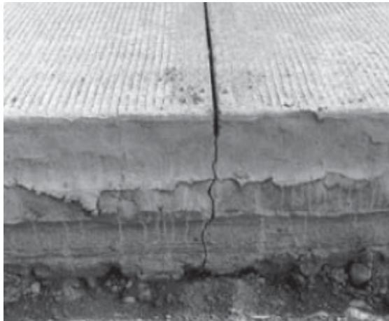
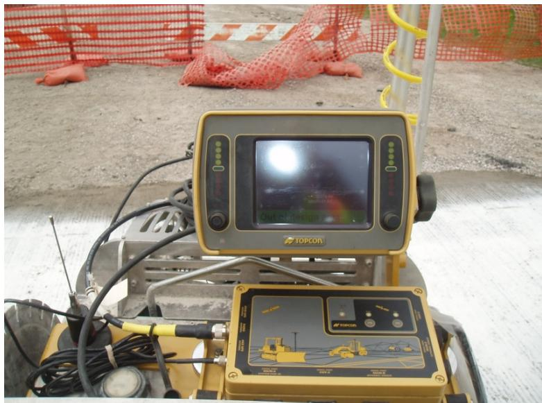
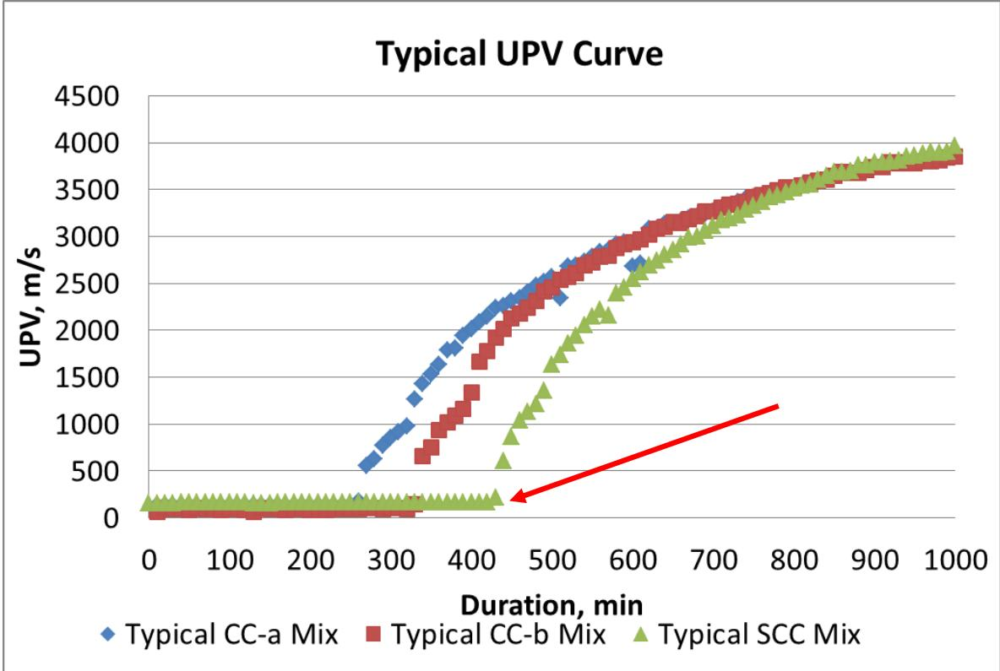
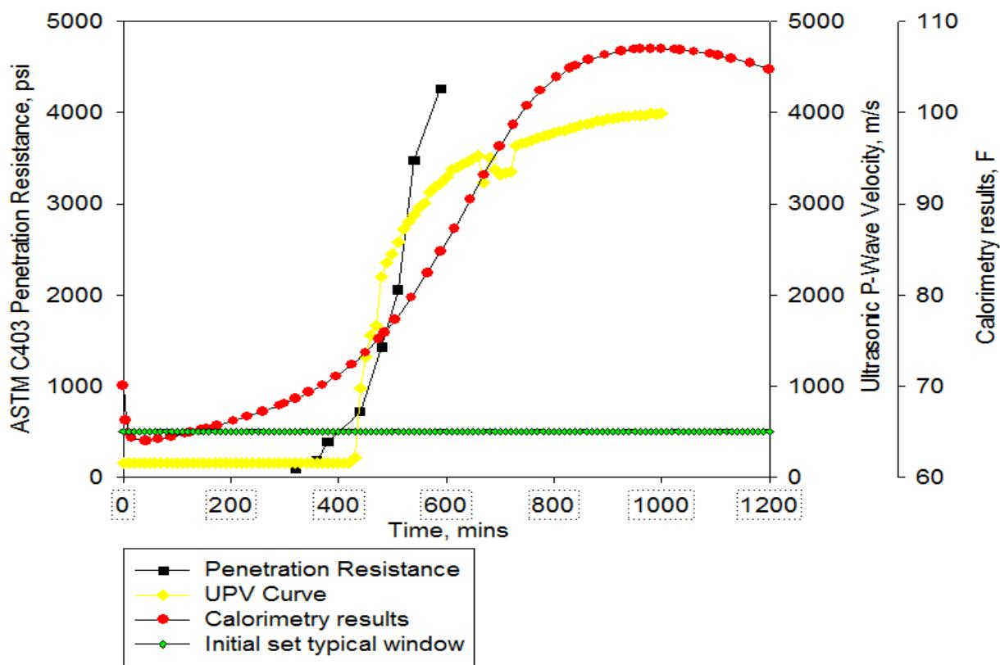
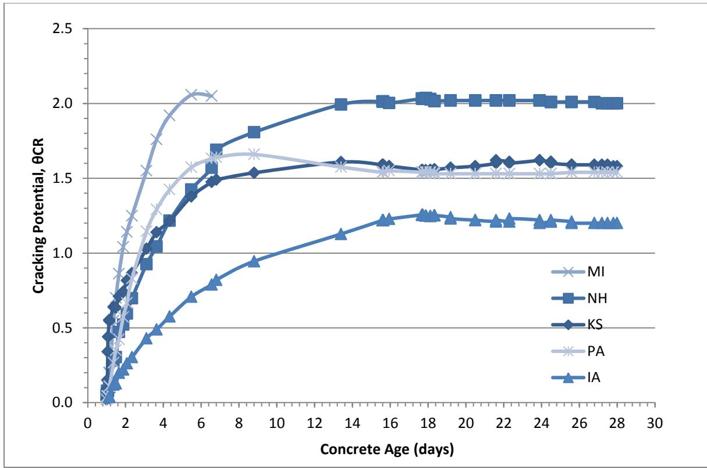
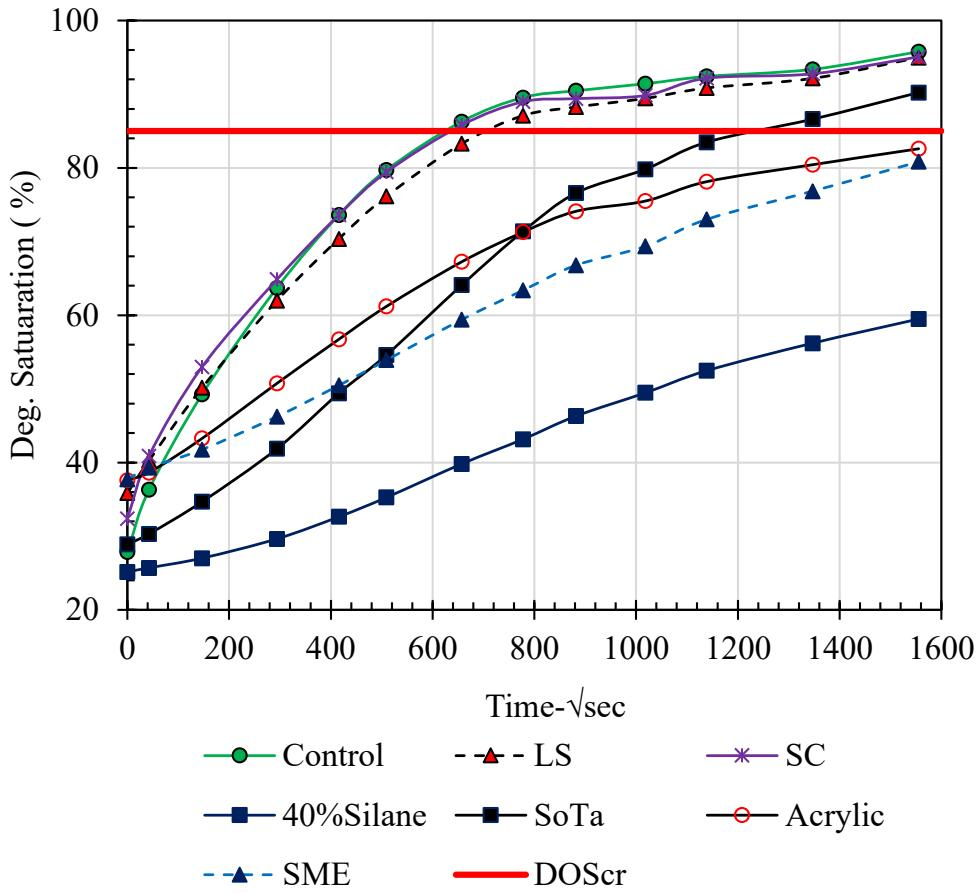

Early Entry Sawing
Early Entry Sawing is a joint sawing implementation method of Concrete Pavement Joint that involves cutting joints within 12 to 18 hours after concrete placement [1]. This timing is significantly earlier than conventional sawing, which typically occurs at 24 to 48 hours [1]. The technique applies sawing earlier (1–4 hours after paving) and more shallowly (1.0–1.5 in. depth) than conventional sawing (one-third to one-quarter of pavement thickness), using a lightweight sawing machine that can operate on the fresh concrete surface before the concrete has achieved significant strength [1].
Sources (11)
Overview and Benefits of Early Entry Sawing
Early saw cuts are a recognized construction feature in high-performance concrete pavement research to manage early-age stresses and improve long-term performance metrics [2]. This method offers increased sawing productivity, as it can begin immediately after finishing, thereby avoiding the conventional sawing window (4–12 hours), while also providing reduced cost through lower manpower requirements and blade wear due to cutting softer concrete. Furthermore, it results in fewer random cracks because it produces weak cross-sections that guide cracking to desired locations. A 2009 field study (IHRB TR-587) on US 34 in Fairfield, Iowa compared early entry sawing (1.5 in. depth) with conventional sawing at one-quarter (2.5 in.) and one-third (3.3 in.) of pavement thickness:
Equipment and Operational Methods
In some projects, particularly those using ternary mixes (20% slag, 20% fly ash) with reduced drying shrinkage, early entry sawing joints exhibited delayed cracking—sometimes taking months or longer to crack—which raised concerns about late-age random cracking [1]. In a related study, the GX-4200 Soff-Cut saw was used for early entry sawing with a diamond blade producing a joint width of 0.25 in. [1]. Empirical measurements from field studies indicate that early entry saw joints typically achieve an average depth of approximately 1.54 inches with a corresponding joint width averaging around 0.30 inches [1]. To manage these operations, heavy gang-saw machines used in conventional operations require later start times compared to typical equipment to prevent leaving impressions or causing cracking on the pavement surface [3]. Furthermore, early entry sawing operations can be constrained by environmental conditions, with paving train lengths reduced from 500 feet to 250 feet on hot days to accommodate faster concrete set rates [4].

Contrast in joints with different saw cut depths [1]Technological advancements have introduced more precision and alternative methods to the process. The use of GPS-controlled centerline saws allows for the recreation of existing pavement centerlines in finished overlays, with accuracy verified by drilling random cores at the joint locations [4]. Additionally, alternative high-energy jointing techniques, such as laser cutting or water jets, have been investigated to replace rotary saws in order to eliminate raveling and spalling distresses that commonly occur even when concrete has hardened sufficiently [5].

GPS receiver and screen [4]Predicting Sawing Times via UPV Monitoring
The maturity concept can be used to monitor strength gain in the pavement, allowing for early opening to traffic or construction vehicles after early entry sawing. [6]
Field studies indicate that while UPV can reliably predict sawing times for most mixtures, operational risks remain if the sawing crew cannot keep pace with rapid concrete setting. Specifically, if sawing lags significantly behind the paver due to insufficient equipment or staff, the risk of random cracking increases even when initial set timing is accurate. [7]
 Comparison of setting and sawing times [7]
Comparison of setting and sawing times [7]
2014 Correlation Study (Taylor & Wang, 2014)
A field study at eight Iowa construction sites established a predictable relationship between UPV-measured initial set and early-entry sawing time:
- Sawing time ≈ 220 minutes after UPV initial set (constant offset, not multiplier)
- Linear regression: Sawing time = 0.9891 × UPV initial set + 219.01 (R² = 0.8997)
Ultrasonic pulse velocity (UPV) monitoring of p-wave propagation can predict early entry sawing time with a constant offset of approximately 220 minutes after initial set, regardless of the specific mixture’s hydration rate. This relationship holds because calorimetric data shows that once hydration begins, the rate of heat generation remains similar across different concrete mixtures. [7]

Typical UPV data with initial set taken as the time when the velocity starts to rise as marked [15] [7]The UPV method utilizes compression waves where the time of flight increases as hydration products interact and stiffen the concrete matrix. This non-destructive technique allows contractors to monitor the uniformity between material batches and determine when the sawing window opens without relying on subjective visual inspections like footprint depth or surface raveling. [7]

Plots from different measurement techniques for a single mix [7]Impact of Concrete Mix Design and SCMs on Strength
The use of high dosages of Type A water reducers can significantly decrease early mortar compressive strength due to retardation effects, though this impact diminishes by 28 days as the overdosed mixtures reach strengths comparable to properly-dosed controls [8]. While high replacement levels of SCMs typically result in lower early-age strength compared to 100% portland cement mixtures, many ternary combinations achieve higher compressive strengths than pure portland cement controls by 28 days [8]. Specifically, the use of 35% slag cement dosage consistently reduces 3-day strength across various cement systems, whereas reducing the slag dosage to 25% mitigates this early strength reduction [8]. Early strengths are primarily controlled by cement hydration rather than supplementary cementitious materials; however, low alkali/low C3A chemistry cements may exhibit atypical strength gain patterns where 7-day strengths do not significantly exceed 3-day results [8]. Incorporating SCMs reduces the maximum temperature rise and delays the time to peak heat generation, resulting in a longer time to initial and final set compared to pure portland cement systems [8]. Mixtures containing metakaolin or high fineness silica fume exhibit decreased bleeding due to the large specific surface area of the materials, whereas exceeding 25 percent Class C fly ash causes bleeding to increase [8]. Regarding setting time, variation is primarily driven by concrete temperature [7], and the constant offset is explained by calorimetric data showing similar hydration rates across all mixtures once hydration begins.
 Temperature data for ternary mixtures with 35% slag cement [8]
Temperature data for ternary mixtures with 35% slag cement [8]
In practical applications, high ambient temperatures shorten the elapsed time required for sawing operations for both conventional and early entry methods, though they affect each method at different rates [3]. Field studies indicate that early entry sawing can achieve flexural strengths as low as 141 psi for joint formation, with maturity gauges monitoring strength gain to target values such as 350 psi for construction vehicle access [4]. Furthermore, mixtures containing harder quartzite and granite aggregates fall into the same predictive dataset as limestone-based mixtures when using UPV to determine early entry sawing windows [3].
 (a). Early entry sawing time versus initial set from UPV measurements [3]
(a). Early entry sawing time versus initial set from UPV measurements [3]
Crack Development and Structural Integrity
The use of polyolefin fibers in early saw cut sections can lead to interpanel cracking between joints spaced at 60 feet, indicating a limitation when combining fiber reinforcement with specific joint spacing strategies [2]. Consequently, for paving applications, mixture evaluation using Hiperpav is required to verify that early cracking is unlikely under expected construction weather conditions before proceeding [8]. According to a 2009 crack development study by Wang et al. (2009), all early entry sawing joints cracked within 25 days, though no random cracking was observed two months after construction [1]. This study found that the average crack time was 12.3 days for early entry, compared to 2.2 days for T/4 and 0.6 days for T/3 [1]. Furthermore, deformation at crack initiation was measured at 0.0055–0.0622 in. for early entry, 0.0012–0.0410 in. for T/4, and 0.0042–0.0458 in. for T/3 [1].

Shrinkage stress-to-tensile strength ratio (cracking potential_C R ) of restrained concrete rings with time [8]Crack times measured by strain gages were consistent with visual observations [1]. Specifically, strain gage monitoring reveals that crack initiation in early entry joints is characterized by a cycling strain development pattern, where deformation fluctuates due to temperature cycling within the measurement range [1].
 Example of stress development of early entry sawing [1]
Example of stress development of early entry sawing [1]
Mitigating Risks through Sealer Treatments
Early entry sawing exposes the interfacial transition zone (ITZ), which has high porosity and permeability, potentially accelerating chemical attacks such as sulfate attack or alkali-silica reaction if joints are not properly sealed [9]. Applying penetrating sealers to early entry saw-cut faces substantially reduces the capillary suction potential of concrete, leading to decreased water absorption and delaying the time to reach critical saturation levels; for instance, specimens treated with silane maintained a degree of saturation below 60% after 15 days in continuous contact with water [9].

Evolution of the degrees of saturation with time [9]The application of hydrophobic sealers increases the water contact angle on saw-cut surfaces, which correlates well with a reduction in primary water absorption during the first 0–5 days after treatment [9]. This effect is particularly relevant for infrastructure elements not in continuous contact with water, as these sealers can transmit vapor to decrease saturation levels [9]. Furthermore, sealer treatments can significantly reduce the formation potential of expansive oxychloride, a chemical mechanism that causes cracking at regular intervals parallel to the saw cut [9]. However, while sealers delay saturation, this delay does not necessarily correlate with improved resistance to freeze-thaw cycles in all concrete types [9].
 presents the amount of potential CaOXY formation in the treated concrete discs immersed in the salt solutions as determined by LT-DSC in accordance with AASHTO T 365. Figure 12. Potential CaOXY formation results [9]
presents the amount of potential CaOXY formation in the treated concrete discs immersed in the salt solutions as determined by LT-DSC in accordance with AASHTO T 365. Figure 12. Potential CaOXY formation results [9]
Applications in Thin Whitetopping Overlays
Early entry sawing is recommended for thin whitetopping overlays where joint spacing is small (15 to 20 feet), requiring the use of narrow 1/8-inch blades and initiation when concrete reaches a flexural strength of only 100 to 120 psi [10]. In some thin overlay applications, dry saws are used with joints cut 3/8 inches wide [6], though in other thin overlay applications, contraction joints are typically sawed to a width of 1/8 inch and are not sealed [6]. This process can be applied to thin overlays as shallow as three inches deep, where joints are cut to a depth of T/3 or 1.5 inches using early entry or “green” cutting concrete saws [6]. Analytical studies using finite element models have shown that modeling saw-cut joints with a depth of 1.5 inches results in slightly larger deflections compared to full-depth cracks, but the maximum stresses and deflection profiles remain largely unchanged between the two crack depths under a 9-kip load [10]. For thin overlay applications with joint spacing between two and five inches in depth, the maximum distance for skipped joints during the initial sawing pass is limited to five joints to prevent premature transverse cracking while avoiding edge raveling [4].
 Deflection comparison for pavement with 3.5″ whitetopping and 4.5 ft joint spacing [10]
Deflection comparison for pavement with 3.5″ whitetopping and 4.5 ft joint spacing [10]
The process often involves sawing primary transverse joints first, followed by intermediate joints, with all joint formation operations kept within 1,000 to 1,500 feet of the slipform paver for mixes without retarders [10]. Specifically, sawing a transverse joint in the 15- to 20-foot range of spacing and then allowing other saws to follow with the intermediate joints can prevent premature cracks on hot weather days [10]; furthermore, early entry sawing is critical for longitudinal joints, which must be formed closer to the slipform paver than in full-depth pavements to accommodate rapid strength gain and changing weather conditions [10]. For thin whitetopping overlays where slab dimensions are six feet or less, sealed joints are generally not recommended unless drainage is poor or heavy truck traffic is present [11]. Additionally, for thin overlays designed to match existing features such as gutters or inlets, early entry sawing can be used to create expansion joints by making two full-depth saw cuts one inch apart at contraction joints near existing expansion joints and replacing the removed concrete with expansion material [11].
Related
- Transverse Cracking
- Concrete Pavement Joint
- Ternary Mixture
- wang-2009-crack-development-ternary-mix-saw-depths
References
- K. Wang, J. Hu, F. Bektas, P. Taylor, and H. Ceylan, "Crack Development in Ternary Mix Concrete Utilizing Various Saw Depths," National Concrete Pavement Technology Center, Ames, IA, Rep. TR-587, 2009. [Online]. Available: https://publications.iowa.gov/19999/1/IADOT_tr_587_Crack_Development_Ternary_Mix_Concrete_Saw_Depths_February_2009.pdf
- J. Grove, G. Fick, T. Rupnow, and F. Bektas, "Material and Construction Optimization for Prevention of Premature Pavement Distress in PCC Pavements," National Concrete Pavement Technology Center, Ames, IA, Rep. TPF-5(066), 2008. [Online]. Available: https://www.intrans.iastate.edu/wp-content/uploads/2018/03/mco-final.pdf
- P. Taylor and X. Wang, "Comparison of Setting Time Measured Using Ultrasonic Wave Propagation with Saw-Cutting Times on Pavements," National Concrete Pavement Technology Center, Ames, IA, Rep. TR-675, 2015. [Online]. Available: https://www.intrans.iastate.edu/wp-content/uploads/2018/03/PCC_setting_time_and_joint_sawing_w_cvr.pdf
- P. D. Wiegand, J. K. Cable, T. Cackler, and D. Harrington, "Improving Concrete Overlay Construction," National Concrete Pavement Technology Center, Ames, IA, Rep. TR-600, 2010. [Online]. Available: http://publications.iowa.gov/20076/1/IADOT_tr_600_Improving_Concrete_Overlay_Construction_2010.pdf
- D. Harrington, R. Rasmussen, D. Merritt, T. Cackler, and P. Taylor, "Long-Term Plan for Concrete Pavement Research and Technology—The Concrete Pavement Road Map (Second Generation): Volume II, Tracks (FHWA-HRT-11-070)," National Center for Concrete Pavement Technology, Iowa State University, Ames, IA, 2012. [Online]. Available: https://www.fhwa.dot.gov/publications/research/infrastructure/pavements/pccp/11070/11070.pdf
- J. K. Cable and J. Williams, "Evaluation of Unbonded Ultrathin Whitetopping of Brick Streets," CTRE, Iowa State University, Ames, IA, Rep. TR-466, 2006. [Online]. Available: https://www.intrans.iastate.edu/wp-content/uploads/2018/03/whitetopping.pdf
- P. Taylor and X. Wang, "Concrete Pavement MDA: Comparison of Setting Time Measured Using Ultrasonic Wave Propagation With Saw-Cutting Times on Pavements in Iowa," National Concrete Pavement Technology Center, Ames, IA, Rep. TPF-5(205), 2014. [Online]. Available: https://www.intrans.iastate.edu/research/completed/comparison-of-setting-time-measured-using-ultrasonic-wave-propagation-with-saw-cutting-times-on-pavements-in-iowa/
- P. Taylor, P. Tikalsky, K. Wang, G. Fick, and X. Wang, "Development of Performance Properties of Ternary Mixtures: Field Demonstrations and Project Summary," National Concrete Pavement Technology Center, Ames, IA, Rep. TPF-5(117), 2012. [Online]. Available: https://www.intrans.iastate.edu/wp-content/uploads/2018/03/ternary_final_w_cvr.pdf
- J. T. Kevern, G. Adil, P. Taylor, S. Sadati, and K. Wang, "Evaluation of Penetrating Sealers for Concrete," National Concrete Pavement Technology Center, Iowa State University, Ames, IA, Rep. TR-765, 2022. [Online]. Available: https://www.intrans.iastate.edu/wp-content/uploads/2022/06/concrete_penetrating_sealers_eval_w_cvr.pdf
- J. K. Cable, F. S. Fanous, H. Ceylan, D. Wood, D. Frentress, T. Tabbert, S. Y. Oh, and K. Gopalakrishnan, "Design and Construction Procedures for Concrete Overlay and Widening of Existing Pavements," Center for Portland Cement Concrete Pavement Technology, Iowa State University, Ames, IA, Rep. TR-511, 2005. [Online]. Available: https://www.intrans.iastate.edu/wp-content/uploads/2018/03/oreo_design.pdf
- G. Fick and D. Harrington, "Concrete Overlay Field Application Program, Final Report: Volume I," National Concrete Pavement Technology Center, Ames, IA, 2012. [Online]. Available: https://apps.itd.idaho.gov/apps/manuals/Materials/Materials%20References/OverlayFieldAppFinalReport.pdf
Feedback on this page